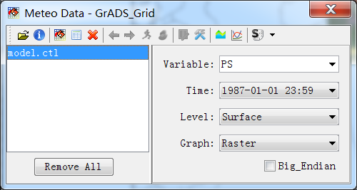

‘Meteorological Data’ dialog is opened when MeteoInfo is started. Press ‘Open Data’ button in main GUI will reopen the dialog if it is closed.

The supported meteorological data formats were listed under ‘Open Data’ button. Click one of them and select one meteorological data file. Some data information will be showed such as times, variables and levels.
The more detailed information of the data could be viewed by pressing ‘Show Data Information’ button.